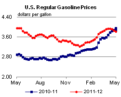
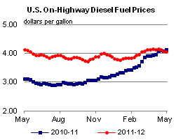
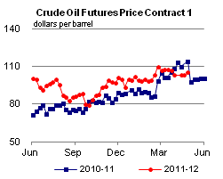
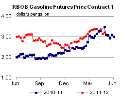
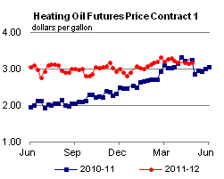
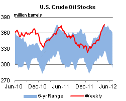
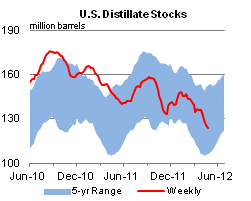
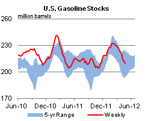
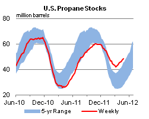

Second NDAA 60-Day Report is Released
On April 27, 2012, the Energy Information Administration (EIA) released the second in a series of reports required by the National Defense Authorization Act (NDAA) for Fiscal Year 2012. The report, The Availability and Price of Petroleum and Petroleum Products Produced in Countries Other Than Iran, is available on the EIA website at http://www.eia.gov/analysis/requests/ndaa/.
EIA estimates that global liquid fuels consumption is at a historically high level. While the global economic outlook remains uncertain, continued growth is expected. Inventories in the United States were estimated to have risen by an average of 0.2 million barrels per day (bbl/d) in March and April 2012, while commercial inventories in other member states of the Organization for Economic Cooperation and Development (OECD) built by an estimated 0.1 million bbl/d over the same time frame. Though data on non-OECD inventories are very limited, the implied build in non-OECD stocks based on estimated global levels of production and consumption averaged 0.2 million bbl/d in March and April. During these two months, there were numerous press reports that Iranian oil exports to other countries were lower than Iranian volumes available for export, causing Iran to accumulate, perhaps involuntarily, crude oil inventories that are included in the implied build in non-OECD inventories.
The biggest recent increases in non-OPEC production have taken place in North America. Tight oil plays were the primary driver of increased U.S. liquid fuels production, which in March 2012 was between 0.1 and 0.2 million bbl/d above its average level during the fourth quarter of 2011. Output from the oil sands has been responsible for Canada's increased production in recent years, but technical issues meant that the country's production was only about 0.3 million bbl/d above the 2009-2011 average in March and April. Other non-OPEC countries currently producing at notably higher rates than their three-year averages include Brazil, China and Colombia.
Current spare crude oil production capacity, while estimated to be higher than during the 2003 to 2008 period, is quite modest by historical standards. With the rise in total global unplanned production outages over the last three months and the likely increase in non-discretionary inventories controlled by Iran, global spare capacity in March and April was estimated to average 2.5 million bbl/d, roughly equal to the average level in January and February.
Over the five days ending April 25, the price of the front month futures contract for Brent crude, a proxy for the global price of light sweet crude grades not subject to transportation bottlenecks, averaged $118.55 per barrel, a $7-per-barrel decline from its average over the March 9 - 14 period when prices were at their highest level for 2012. Although lower than their peak in mid-March, prices are still well above their level at the start of the year. Also, the market remains backwardated, with front month prices over the five days ending April 25 about $5 per barrel above those for delivery 12 months in the future. Although backwardation has eased since the end of February, when the price difference between the front month and 12-month contracts was $7.69 per barrel for the five days ending February 27, the continuing premium on contracts for near-term delivery is still indicative of tightness in world oil markets.
Reformulated blendstock for oxygenate blending (RBOB) prices have been generally rising over the past two months, although they began to decrease in recent weeks. Comparing the 5-day periods ending February 27, 2012 and April 25, 2012, the price of the front month of the NYMEX RBOB contract, which calls for delivery in New York Harbor, rose from $3.11 per gallon to $3.16 per gallon. During March and April, the average price for the front month of the RBOB futures contract was $3.31 per gallon, $1.09 per gallon higher than the average front month price over the three-year period from 2009-2011, and $0.17 per gallon higher than the March and April 2011 average. It should be noted that some of the increase in RBOB futures prices over the last 60 days is due to the switch from winter-grade gasoline to more expensive summer-grade gasoline.
Gasoline and diesel prices continue to fall
The U.S. average retail price of regular gasoline decreased 4 cents this week to $3.83 per gallon, 13 cents per gallon lower than last year at this time. This is the first time since 2003 that the national average gasoline price ended April lower than at the beginning of the month. All regions across the country were down for a second consecutive week, with the largest drop coming in the Gulf Coast, where prices fell about six cents versus last week. The West Coast price fell more than two cents, but is still the highest in the Nation at $4.12 per gallon. The Rocky Mountain region showed the smallest decline, losing just over a penny to $3.79 per gallon. In the Midwest, gasoline is now $3.75 per gallon, and the East Coast price declined to $3.83 per gallon.
The national average diesel fuel price decreased about a penny to $4.07 per gallon, 5 cents per gallon lower than last year at this time. All the major regions saw diesel prices drop for a second consecutive week, and the price in all regions except the Midwest decreased between 1 and 2 cents. The Midwest price declined less than a penny to remain at $3.97 per gallon.
Propane inventories continue to rise
Total U.S. inventories of propane rose last week by 1.1 million barrels to end at 48.5 million barrels, 20.8 million barrels (74.8 percent) higher than a year ago. Gulf Coast regional inventories grew by 0.5 million barrels, while Midwest inventories were up by 0.3 million barrels. The East Coast and Rocky Mountain/West Coast regions each added 0.1 million barrels of propane. Propylene non-fuel-use inventories represented 7.3 percent of total propane inventories.
Text from the previous editions of This Week In Petroleum is accessible through a link at the top right-hand corner of this page.
|  |  | ||||||
| Retail Data | Change From Last | Retail Data | Change From Last | ||||
| 04/30/12 | Week | Year | 04/30/12 | Week | Year | ||
| Gasoline | 3.830 | Diesel Fuel | 4.073 | ||||
|  |  | ||||||||||||||||||||||||||
|
 | ||||||||||||||||||||||||||
| *Note: Crude Oil Price in Dollars per Barrel. | |||||||||||||||||||||||||||
|  |  | ||||||
|  |  | ||||||
| Stocks Data | Change From Last | Stocks Data | Change From Last | ||||
| 04/27/12 | Week | Year | 04/27/12 | Week | Year | ||
| Crude Oil | 375.9 | Distillate | 124.0 | ||||
| Gasoline | 209.7 | Propane | 48.507 | ||||